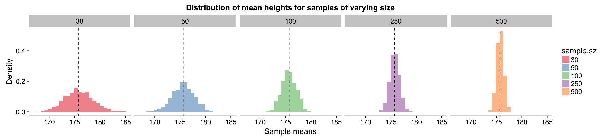
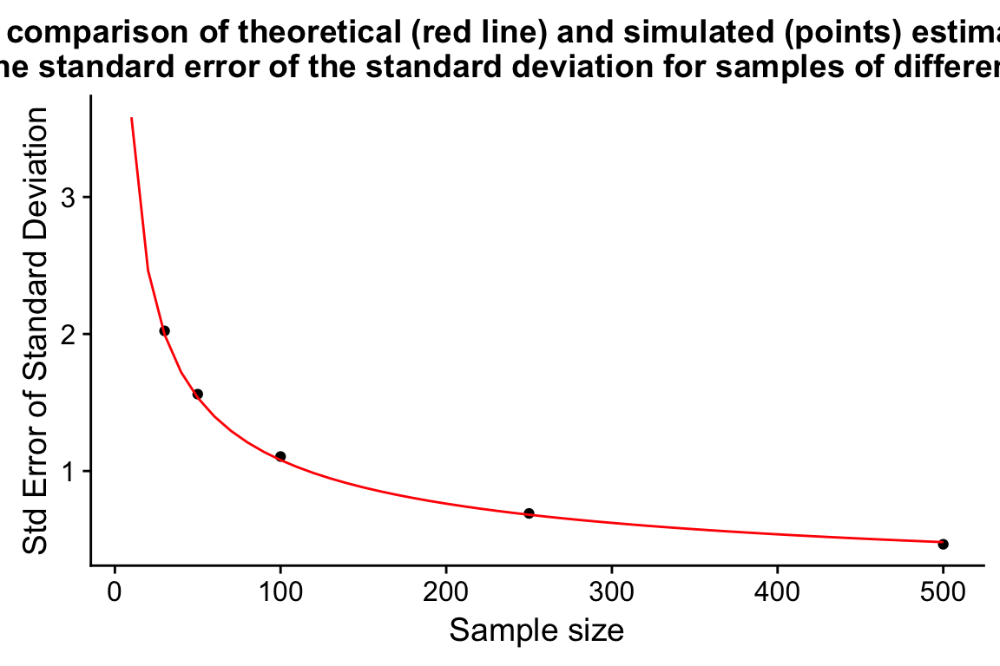
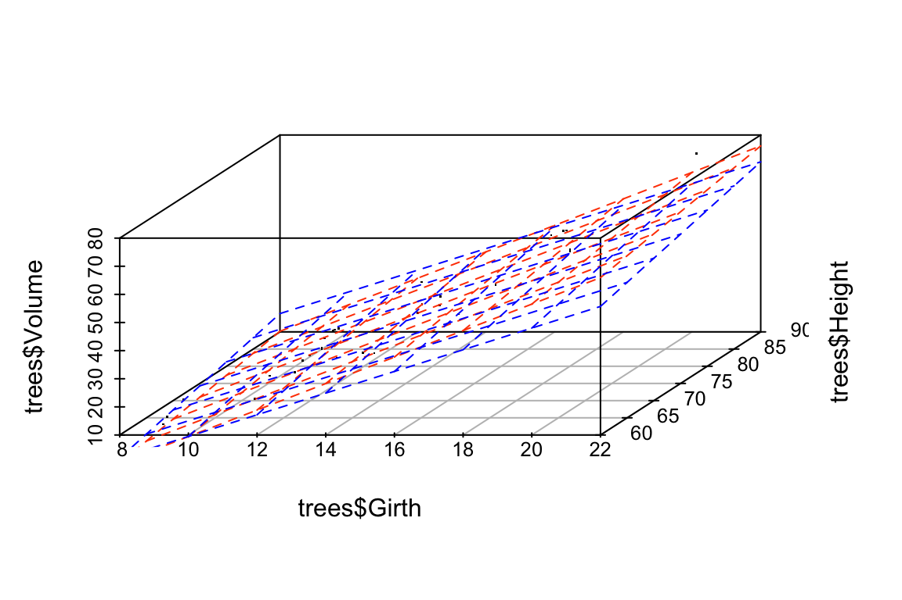

Chapter 13 Simulating Sampling Distributions and Confidence Intervals
Usually when we collect biological data, it’s because we’re trying to learn about some underlying “population” of interest. Population here could refer to an actual population (e.g. all males over 20 in the United States; brushtail possums in the state of Victoria, Australia), an abstract population (e.g. corn plants grown from Monsanto “round up ready” seed; yeast cells with genotypes identical to the reference strain S288c), outcomes of a stochastic process we can observe and measure (e.g. meiotic recombination in flies; hadrons detected at the LHC during a particle collision experiment), etc.
It is often impractical or impossible to measure all objects/individuals in a population of interest, so we take a sample from the population and make measurements on the variables of interest in that sample. We do so with the hope that the various statistics we calculate on the variables of interest in that sample will be useful estimates of those same statistics in the underlying population.
However, we must always keep in mind that the statistics we calculate from our sample will almost never exactly match those of the underlying population. That is when we collect a sample, and measure a statistic (e.g. mean) on variable X in the sample, there is a degree of uncertainty about how well our estimate matches the true value of that statistic for X in the underlying population.
Statistical inference is about quantifying the uncertainty associated with statistics and using that information to test hypotheses and evaluate models.
Today we’re going to review a fundamental concept in statistical inference, the notion of a sampling distribution for a statistic of interest. A sampling distribution is the probability distribution of a given statistic for samples of a given size. Traditionally sampling distributions were derived analytically. In this class session we’ll see how to approximate sampling distributions for any a statistic using computer simulation.
13.1 Libraries
library(tidyverse)
library(magrittr)
library(stringr)13.2 Data set: Simulated male heights
To illustrate the concept of sampling distributions, we’ll use a simulated data set to represent the underlying population we’re trying to estimate statistics for. This will allow us to compare the various statistics we calculate and their sampling distributions to their “true” values.
Let’s simulate a population consisting of 25,000 individuals with a single trait of interest – height (measured in centimeters). We will simulate this data set based on information about the distribution of the heights of adult males in the US estimated in a study carried out from 2011-2014 by the US Department of Health and Human Services1.
13.2.1 Seeding the pseudo-random number generator
When carrying out simulations, we employ random number generators (e.g. to choose random samples). Most computers can not generate true random numbers – instead they use algorithms that approximate the generation of random numbers (pseudo-random number generators). One important difference between a true random number generator and a pseudo-random number generator is that we can regenerate a series of pseudo-random numbers if we know the “seed” value that initialized the algorithm. We can specifically set this seed value, so that we can guarantee that two different people evaluating this notebook get the same results, even though we’re using (pseudo)random numbers in our simulation.
# make our simulation repeatable by seeding RNG
set.seed(20180321)13.2.2 Generating the simulated population
Having seeded our RNG, we then generate our simulated population using the rnorm() function. rnorm() draws random values from a normal distribution with the given parameters of mean and standard deviation. We didn’t have to use a normal distribution for our simulations, but many biological variables are approximately normally distributed, so this is a common assumption.
# male mean height and sd in centimeters from USDHHS report
mean.ht <- 175.7
sd.ht <- 15.19
height.data <- data_frame(height = rnorm(25000, mean = mean.ht, sd = sd.ht))13.2.3 Properties of the simulated population
Let’s take a moment to visualize the distribution of heights in our population of interest:
ggplot(height.data, aes(x = height)) +
geom_histogram(aes(y = ..density..), bins=50, alpha=0.5) +
geom_density() +
labs(x = "Height (cm)", title = "Distribution of Heights in the Population of Interest")
When we generated this simulated population, I specified that the heights should be drawn from a normal distribution. As one would expect, the histogram and density plot look fairly close to the classic bell-shaped curve of a normal distribution.
Let’s turn some key summary statistics of the population. The values of these summary statistics are those we’re trying to estimate from our sample(s). We’ll refer to these as the “true” values.
true.values <-
height.data %>%
summarize(mean.height = mean(height),
sd.height = sd(height))
true.values
# A tibble: 1 x 2
mean.height sd.height
<dbl> <dbl>
1 176. 15.2In mathematical notation our population is normally distributed with a mean height of 175.7202cm and standard deviation of 15.1964cm. Note that these values are close to, but not exactly the parametes we passed to rnorm().
13.3 Random sampling from the simulated population
Let’s simulate the process of taking a single sample of 30 individuals from our population, using the dplyr::sample_n() function:
sample.a <-
height.data %>%
sample_n(30)Now we’ll create a histogram of the height variable in our sample. For reference we’ll also plot the histogram for the true population in the background (but remember, in the typical case you don’t know what the true population looks like)
sample.a %>%
ggplot(aes(x = height)) +
geom_histogram(data=height.data, aes(x = height, y = ..density..), alpha=0.25, bins=50) +
geom_histogram(aes(y = ..density..), fill = 'steelblue', alpha=0.75, bins=9) +
geom_vline(xintercept = true.values$mean.height, linetype = "solid") +
geom_vline(xintercept = mean(sample.a$height), linetype = "dashed") +
labs(x = "Height (cm)", y = "Density",
title = "Distribution of heights in the underlying population (grey)\nand a single sample of size 30 (blue)")
The solid vertical line represent the true mean of the population, the dashed line represents the sample mean. Comparing the two distributions we see that while our sample of 30 observations is relatively small,its location (center) and spread that are roughly similar to those of the underlying population.
Let’s create a table giving the estimates of the mean and standard deviation in our sample:
sample.a %>%
summarize(sample.mean = mean(height),
sample.sd = sd(height))
# A tibble: 1 x 2
sample.mean sample.sd
<dbl> <dbl>
1 173. 13.2Based on our sample, we estimate that the mean height of males in our population of interest is 173.4748cm with a standard deviation of 13.1762cm.
13.3.1 Another random sample
Let’s step back and think about our experiment. We took a random sample of 30 indiviuals from the population. The very nature of a “random sample” means we could just as well have gotten a different collection of individuals in our sample. Let’s take a second random sample of 25 individuals and see what the data looks like this time:
sample.b <-
height.data %>%
sample_n(30)
ggplot(sample.b, aes(x = height)) +
geom_histogram(data=height.data, aes(x = height, y = ..density..), alpha=0.25, bins=50) +
geom_histogram(aes(y = ..density..), fill = 'steelblue', alpha=0.75, bins=9) +
geom_vline(xintercept = true.values$mean.height, linetype = "solid") +
geom_vline(xintercept = mean(sample.b$height), linetype = "dashed") +
labs(x = "Height (cm)", y = "Density",
title = "Distribution of heights in the underlying population (grey)\nand a single sample of size 30 (blue)") 
sample.b %>%
summarize(sample.mean = mean(height),
sample.sd = sd(height))
# A tibble: 1 x 2
sample.mean sample.sd
<dbl> <dbl>
1 175. 14.8This time we estimated the mean height to be 175.1897cm and the standard deviation to be 13.1762cm.
13.3.2 Simulating the generation of many random samples
When we estimate population parameters, like the mean and standard deviation, based on a sample, our estimates will differ from the true population values by some amount. Any given random sample might provide better or worse estimates than another sample.
We can’t know how good our estimates of statistics like the mean and standard deviation are from any specific sample, but we we can study the behavior of such estimates across many simulated samples and learn something about how well our estimates do on average, as well the spread of these estimates.
13.3.3 A function to estimate statistics of interest in a random sample
First we’re going to write a function called rsample.stats that to carries out the following steps:
- Given a data frame
x - Take a random sample of size
n - For the variable specified by the character string,
var.name, calculate the mean and standard deviation of that variable in the random sample - Return a table giving the sample size, sample mean, and sample standard deviation, represented as a data frame
rsample.stats <- function(x, n, var.name) {
sample_x <- sample_n(x, n)
data_frame(sample.size = n,
sample.mean = mean(sample_x[[var.name]]),
sample.sd = sd(sample_x[[var.name]]))
}Let’s test rsample.stats:
rsample.stats(height.data, 30, "height")
# A tibble: 1 x 3
sample.size sample.mean sample.sd
<dbl> <dbl> <dbl>
1 30. 174. 16.713.3.4 Generating statistics for many random samples
Now we’ll see how to combine rsample.stats with two additional functions to repeatedly run the rsample.stats function:
df.samples.of.30 <-
rerun(500, rsample.stats(height.data, 30, "height")) %>%
bind_rows()The function rerun is defined in the purrr library (automatically loaded with tidyverse). purrr:rerun() re-runs an expression(s) multiple times. The first argument to rerun() is the number of times you want to re-run, and the following arguments are the expressions to be re-run. Thus the second line of the code block above re-runs the rsample.stats function 500 times using height.data as the input, generating sample statistics for samples of size 30 each time it’s run. rerun returns a list whose length is the specified number of runs.
The third line includes a call the dplyr::bind_rows(). This simply takes the list that rerun returns and collapses the list into a single data frame. df.samples.of.30 is thus a data frame in which each row gives the sample size, sample mean, and sample standard deviation for a random sample of 30 individuals drawn from our underlying population (height.data).
df.samples.of.30
# A tibble: 500 x 3
sample.size sample.mean sample.sd
<dbl> <dbl> <dbl>
1 30. 177. 18.0
2 30. 173. 14.6
3 30. 178. 15.1
4 30. 171. 16.9
5 30. 176. 12.7
6 30. 176. 13.5
7 30. 177. 15.2
8 30. 178. 19.3
9 30. 171. 15.5
10 30. 175. 13.0
# ... with 490 more rows13.4 Simulated sampling distribution of the mean
Let’s review what we just did:
- We generated 500 samples of size 30
- For each of the samples we calculated the mean and standard deviation of the height variable in that sample
- We combined each of those estimates of the mean and standard deviation into a data frame
The 500 estimates of the mean we generated represents a new distribution – what we will call a sampling distribution of the mean for samples of size 30. Let’s plot this sampling distribution:
ggplot(df.samples.of.30, aes(x = sample.mean, y = ..density..)) +
geom_histogram(bins=25, fill = 'firebrick', alpha=0.5) +
geom_vline(xintercept = true.values$mean.height, linetype = "dashed") +
labs(x = "Sample means", y = "Density",
title = "Distribution of mean heights for 500 samples of size 30")
This particular sampling distribution of the mean is a probability distribution that we can use to estimate the probability that a sample mean falls within a given interval, assuming our sample is a random sample of size 30 drawn from our underlying population.
From our visualization, we see that the distribution of sample mean heights is approximately centered around the true mean height. Most of the sample estiamtes of the mean height are within 5 cm of the true population mean height (175.6cm), but a small number of estimates of the sample mean as off by nearly 10cm.
Let’s make this more precise by calculating the mean and standard deviation of the sampling distribution of means (I included the min and max as well).
df.samples.of.30 %>%
summarize(mean.of.means = mean(sample.mean),
sd.of.means = sd(sample.mean),
min.of.means = min(sample.mean),
max.of.means = max(sample.mean))
# A tibble: 1 x 4
mean.of.means sd.of.means min.of.means max.of.means
<dbl> <dbl> <dbl> <dbl>
1 176. 2.89 167. 185.13.4.1 Sampling distributions for different sample sizes
In the example above we simulated the sampling distribution of the mean for samples of size 30. How would the sampling distribution change if we increased the sample size? In the next code block we generate sampling distributions of the mean (and standard deviation) for samples of size 50, 100, 250, and 500.
df.samples.of.50 <-
rerun(500, height.data %>% rsample.stats(50, "height")) %>%
bind_rows()
df.samples.of.100 <-
rerun(500, height.data %>% rsample.stats(100, "height")) %>%
bind_rows()
df.samples.of.250 <-
rerun(500, height.data %>% rsample.stats(250, "height")) %>%
bind_rows()
df.samples.of.500 <-
rerun(500, height.data %>% rsample.stats(500, "height")) %>%
bind_rows()To make plotting and comparison easier we will combine each of the individual data frames, representing the different sampling distributions for samples of a given size, into a single data frame.
df.combined <-
bind_rows(df.samples.of.30,
df.samples.of.50,
df.samples.of.100,
df.samples.of.250,
df.samples.of.500) %>%
# create a factor version of sample size to facilitate plotting
mutate(sample.sz = as.factor(sample.size))We then plot each of the individual sampling distributions, faceting on sample size.
ggplot(df.combined, aes(x = sample.mean, y = ..density.., fill = sample.sz)) +
geom_histogram(bins=25, alpha=0.5) +
geom_vline(xintercept = true.values$mean.height, linetype = "dashed") +
facet_wrap(~ sample.sz, nrow = 1) +
scale_fill_brewer(palette="Set1") + # change color palette
labs(x = "Sample means", y = "Density",
title = "Distribution of mean heights for samples of varying size") 
13.4.2 Discussion of trends for sampling distributions of different sizes
The key trend we see when comparing the sampling distributions of the mean for samples of different size is that as the sample size gets larger, the spread of the sampling distribution of the mean becomes narrower around the true mean. This means that as sample size increases, the uncertainty associated with our estimates of the mean decreases.
Let’s create a table, grouped by sample size, to help quantify this pattern:
sampling.distn.mean.table <-
df.combined %>%
group_by(sample.size) %>%
summarize(mean.of.means = mean(sample.mean),
sd.of.means = sd(sample.mean),
min.of.means = min(sample.mean),
max.of.means = max(sample.mean))
sampling.distn.mean.table
# A tibble: 5 x 5
sample.size mean.of.means sd.of.means min.of.means max.of.means
<dbl> <dbl> <dbl> <dbl> <dbl>
1 30. 176. 2.89 167. 185.
2 50. 176. 2.11 170. 182.
3 100. 176. 1.57 170. 180.
4 250. 176. 0.976 173. 179.
5 500. 176. 0.680 174. 178.13.5 Standard Error of the Mean
We see from the graph and table above that our estimates of the mean cluster more tightly about the true mean as our sample size increases. This is obvious when we compare the standard deviation of our mean estimates as a function of sample size.
The standard deviation of the sampling distribution of a statistic of interest is called the Standard Error of that statistic. Here, through simulation, we are approximating the Standard Error of the Mean.
One can show mathematically that for normally distributed data the expected Standard Error of the Mean as a function of sample size is: \[ \mbox{Standard Error of Mean} = \frac{\sigma}{\sqrt{n}} \] where \(\sigma\) is the population standard deviation (i.e. the “true” standard deviation), and \(n\) is the sample size.
Let’s compare that theoretical expectation to our simulated results:
se.mean.theory <- sapply(seq(10,500,10), function(n){ true.values$sd.height/sqrt(n) })
df.se.mean.theory <- data_frame(sample.size = seq(10,500,10), std.error = se.mean.theory)
ggplot(sampling.distn.mean.table, aes(x = sample.size, y = sd.of.means)) +
# plot standard errors of mean based on our simulations
geom_point() +
# plot standard errors of the mean based on theory
geom_line(aes(x = sample.size, y = std.error), data = df.se.mean.theory, color="red") +
labs(x = "Sample size", y = "Std Error of Mean",
title = "A comparison of theoretical (red line) and simulated (points) estimates of\nthe standard error of the mean for samples of different size")
We see that for the sampling distribution of the mean, even simulations of moderate size (500 replicates is on the small end for statistical simulations) produce results that conforms closely to analytical theory.
13.6 Interpretting Trends for the Sampling Distribution of the Mean
We see that as sample sizes increase, the standard error of the mean decreases. This means that as our samples get larger, our uncertainty in our sample estimate of the mean (our best guess for the population mean) gets smaller.
13.7 Sampling Distribution of the Standard Deviation
Above we explored how the sampling distribution of the mean changes with sample size. We can similarly explore the sampling distribution of any other statistic, such as the standard deviation, or the median, or the the range, etc.
Recall that when we drew random samples we calculated the standard deviation of each of those samples in addition to the mean. This means we can immediately visualize the sampling distribution of the standard deviation as shown below:
ggplot(df.combined, aes(x = sample.sd, y = ..density.., fill = sample.sz)) +
geom_histogram(bins=25, alpha=0.5) +
geom_vline(xintercept = true.values$sd.height, linetype = "dashed") +
facet_wrap(~ sample.sz, nrow = 1) +
scale_fill_brewer(palette="Set1") +
labs(x = "Sample standard deviations", y = "Density",
title = "Sampling distribution of standard deviation of height for samples of varying size") 
The key trend we saw when examining the sampling distribution of the mean is also apparent for standard deviation – bigger samples lead to tighter sampling distributions and hence less uncertainty in the sample estimates of the standard deviation.
As before, we summarize key statistics of the sampling distribution in a table:
sampling.distn.sd.table <-
df.combined %>%
group_by(sample.size) %>%
summarize(mean.of.sds = mean(sample.sd),
sd.of.sds = sd(sample.sd),
min.of.sds = min(sample.sd),
max.of.sds = max(sample.sd))
sampling.distn.sd.table
# A tibble: 5 x 5
sample.size mean.of.sds sd.of.sds min.of.sds max.of.sds
<dbl> <dbl> <dbl> <dbl> <dbl>
1 30. 15.1 1.99 9.58 21.3
2 50. 15.3 1.60 11.2 21.2
3 100. 15.2 1.07 12.7 17.9
4 250. 15.1 0.696 13.0 17.0
5 500. 15.2 0.469 13.8 16.5For normally distributed data the expected Standard Error of the Standard Deviation (i.e. the standard deviation of standard deviations!) is approximately:
\[ \mbox{Standard Error of Standard Deviation} \approx \frac{\sigma}{\sqrt{2(n-1)}} \] where \(\sigma\) is the population standard deviation, and \(n\) is the sample size.
As before, let’s visually compare the theoretical expectation to our simulated estimates.
se.sd.theory <- sapply(seq(10,500,10), function(n){ true.values$sd.height/sqrt(2*(n-1))})
df.se.sd.theory <- data_frame(sample.size = seq(10,500,10), std.error = se.sd.theory)
ggplot(sampling.distn.sd.table, aes(x = sample.size, y = sd.of.sds)) +
# plot standard errors of mean based on our simulations
geom_point() +
# plot standard errors of the mean based on theory
geom_line(aes(x = sample.size, y = std.error), data = df.se.sd.theory, color="red") +
labs(x = "Sample size", y = "Std Error of Standard Deviation",
title = "A comparison of theoretical (red line) and simulated (points) estimates of\nthe standard error of the standard deviation for samples of different size")
13.8 Confidence Intervals
The sampling distribution of a statistic is the probability distribution of the statistic of interest you would observe if you took a large number of random samples of a given size from a population calculated that statistic for each of the samples. We’ve learned that the standard deviation of the sampling distribution of a statistic has a special name – the standard error of that statistic. The standard error of a statistic provides a way to quantify the uncertainty of a statistic across random samples.
Our simulations have taught us a number of things:
- As sample size increases, the sample estimate of the given statistic is more likely to be close to the true value of that statistic in the underlying population
- As sample size increases, the standard error of the statistic decreases
We can use this knowledge to calculate a plausible ranges of values for the statistic of interest from random samples. We call such ranges confidence intervals for the statistic of interest.
13.9 Defining confidence intervals
We define the \((100\times\beta)\)% confidence interval for the statistic \(\phi\) as the interval:
\[ CI_\beta = \phi_{i,n} \pm (z \times {SE}_{\phi,n}) \]
Where:
- \(\phi_i,n\) is the statistic of interest in a random sample of size \(n\)
- \({SE}_{\phi,n}\) is the standard error of \(\phi\)
And the value of \(z\) is chosen so that:
- across many different random samples of size \(n\), the true value of the \(\phi\) in the population of interest would fall within the interval apprimxately \(CI_\beta\) \((100\times\beta)\)% of the time
So rather than estimating a single value of \(\phi\) from our data, we will use our observed data plus knowledge about the sampling distribution of \(\phi\) to estimate a range of plausible values for \(\phi\). The size of this interval will be chosen so that if we considered many possible random samples, the true population value of \(\phi\) would be bracketed by the interval in \((100\times\beta)\)% of the samples.
13.10 Simulating confidence intervals for the mean
To make the idea of a confidence interval more concrete, let’s carry out a simulation based on confidence intervals for the mean. In our simulation we will explore how varying the value of \(z\) changes the percentage of times that the confidence interval brackets the true population mean.
13.11 Sample estimate of the standard error of the mean
From our simulations above we saw that if \(X\) is normally distributed in a population of interest, \(X \sim N(\mu, \sigma)\), then the sampling distribution of the mean is also normally distributed with mean \(\sim μ\), and standard error \({SE}_\overline{X} = \frac{\sigma}{\sqrt{n}}\):
\[ \overline{X} \sim N \left( \mu, \frac{\sigma}{\sqrt{n}}\ \right) \]
The above formula requires us to know the true population standard deviation, \(\sigma\) in order to calculate \({SE}_\overline{X}\). In the absence of this information, the best we can do is use our “best guess” for \(\sigma\) – the sample standard deviation \(s_X\) that we calculate from the sample in hand. If we’re comfortable making the assumption that the sampling distribution of the mean is approximately normal than we can estimate the standard error of the mean as: \[ {SE}_{\overline{X}} = \frac{s_X}{\sqrt{n}} \]
We’ll revisit this assumption of approximate normality of the sampling distribution of the mean when we discuss the t-distribution.
13.12 CI of mean simulation
In our simulation we’re going to generate a large number of samples, and for each sample we will calculate the sample estimate of the standard error of the mean, and the CI of the mean for a range of \(z\) values. We will then ask, “for what fraction of the samples did our CI overlap the true population mean”? This will give us a sense of how well different confidence intervals, expressed in terms of multiples \(z\) of the sample standard errors, do in terms providing a plausible range for the mean.
First, we’ll setup a utitity function to generate random samples and calculate stats of interest:
set.seed(20171114)
rsample.stats <- function(x, n, var.name) {
sample_x <- sample_n(x, n)
data_frame(sample.size = n,
sample.mean = mean(sample_x[[var.name]]),
sample.sd = sd(sample_x[[var.name]]),
sample.se = sample.sd/sqrt(n))
}Now we’ll generate 1000 random samples of size 50.
samples.of.50 <-
rerun(1000, rsample.stats(height.data, 50, "height")) %>%
bind_rows()Using those 1000 random sample, we consider different values of \(z\) to calculate confidence intervals. For each value of \(z\) we determine what percent of the confidence intervals included the true mean.
z.values <- seq(1, 3, 0.05)
perc.in.CI <- c()
for (z in z.values) {
CI.left <- samples.of.50$sample.mean - z * samples.of.50$sample.se
CI.right <- samples.of.50$sample.mean + z * samples.of.50$sample.se
mean.in.CI <- (CI.left <= true.values$mean.height) & (CI.right >= true.values$mean.height)
perc.in.CI <- c(perc.in.CI, 100 * sum(mean.in.CI)/length(mean.in.CI))
}
CI.df <- data_frame(z = z.values, perc.brackets.mean = perc.in.CI)
head(CI.df)
# A tibble: 6 x 2
z perc.brackets.mean
<dbl> <dbl>
1 1.00 67.7
2 1.05 69.9
3 1.10 72.2
4 1.15 73.9
5 1.20 76.2
6 1.25 78.0We then plot our results. Since the sampling distribution of the mean is approximately normally distributed, we can also use the distribution function of a normal distribution to calculate the proportion of samples that would include the true mean as we change the size of our confidence intervals (by changing \(z\)). This theoretical expectation is shown as the red dashed line in the figure below.
# theoretical expectation from the fact that sampling distribution of mean is
# normally distributed
theory.frac.overlap <- 1 - 2*(1 - pnorm(z.values))
ggplot(CI.df, aes(x = z, y = perc.brackets.mean)) +
geom_line(aes(x = z.values, y = theory.frac.overlap * 100), color="red", linetype = 'dashed') +
geom_line() +
labs(x = "z in CI = sample mean ± z × SE",
y = "% of CIs that include \ntrue population mean")
How should we interpret the results above? We found as we increased the scaling of our confidence intervals (larger \(z\)), the true mean was within sample confidence intervals a greater proportion of the time. For example, when \(z = 1\) we found that the true mean was within our CIs roughly 70% of the time, while at \(z = 2\) the true mean was within our confidence intervals approximately 95% of the time.
13.13 Generating a table of CIs and corresponding margins of error
The table below gives the percent CI and the corresponding margin of error (the appropriate \(z\) to use in \(z \times {SE}\)) for that confidence interval based on the assumption that the sampling distribution of the statistic of interest is normal (NOTE: not all sampling distributions are normal, so this doesn’t always apply).
percent <- c(0.80, 0.90, 0.95, 0.99, 0.997)
zval <- -qnorm((1 - percent)/2) # account for two tails of the sampling distn
z.df <- data.frame(ci.percent = percent, margin.of.error = zval)
z.df
ci.percent margin.of.error
1 0.800 1.282
2 0.900 1.645
3 0.950 1.960
4 0.990 2.576
5 0.997 2.968Using this table we can lookup the appropriate margin of error (\(z\)) to use to get correspnoding confidence intervals.
For example:
To calculate the for the 95% CIs of the mean, we look up the corresponding row of the table which tells us the appropriate confidence interval is given by: \(\overline{X} \pm 1.96 \times {SE}_\overline{X}\)
For 99% CIs of the mean: \(\overline{X} \pm 2.58 \times {SE}_\overline{X}\)
13.14 Conditions for sampling distribution of the mean to be nearly normal
For the sampling distribution of the mean to be nearly normal, and hence \({SE}_\overline{x}\) to be accurate, the following conditions should hold:
- Sample observations are independent
- Sample size is large (\(n \geq 30\) is good rule of thumb)
- Population distribution is not strongly skewed
13.15 Interpreting our simulation
Let’s review exactly what we mean by a “95% confidence interval”. This means if we took many samples and built a confidence interval for each sample using the equation above, then about 95% of those intervals would contain the true mean, μ. Note that this is exactly what we did in our simulation!
samples.of.50 %<>%
mutate(ci.95.left = (sample.mean - 1.96 * sample.se),
ci.95.right = (sample.mean + 1.96 * sample.se),
ci.includes.mean = (ci.95.left <= true.values$mean.height) & (ci.95.right >= true.values$mean.height))
n.draw <- 100
samples.of.50 %>%
sample_n(n.draw) %>%
ggplot(aes(x = sample.mean, y = seq(1,n.draw), color = ci.includes.mean)) +
geom_vline(xintercept = true.values$mean.height, color = "gray", alpha=0.75, linetype = "dashed", size = 1) +
geom_point() +
geom_errorbarh(aes(xmin = ci.95.left, xmax = ci.95.right)) +
scale_color_manual(values=c("red", "black")) +
labs(x = "mean x and estimated CI", y = "sample",
title = "95% CI: mean ± 1.96×SE\nfor 100 samples of size 50") 
You should be careful in interpretting confidence intervals. This quote from the NIST page on confidence intervals provides a useful explanation:
As a technical note, a 95 % confidence interval does not mean that there is a 95 % probability that the interval contains the true mean. The interval computed from a given sample either contains the true mean or it does not. Instead, the level of confidence is associated with the method of calculating the interval … That is, for a 95% confidence interval, if many samples are collected and the confidence interval computed, in the long run about 95% of these intervals would contain the true mean.
US Dept. of Health and Human Services; et al. (August 2016). “Anthropometric Reference Data for Children and Adults: United States, 2011–2014” (PDF). National Health Statistics Reports. 11. https://www.cdc.gov/nchs/data/series/sr_03/sr03_039.pdf↩